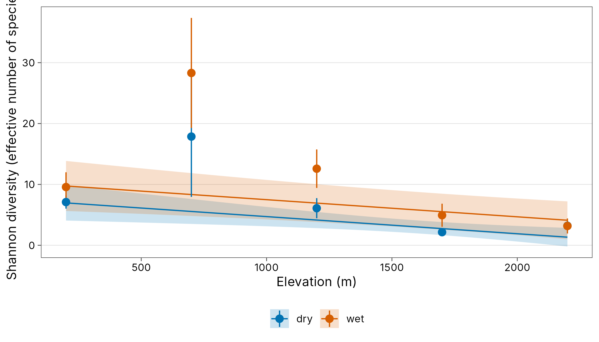
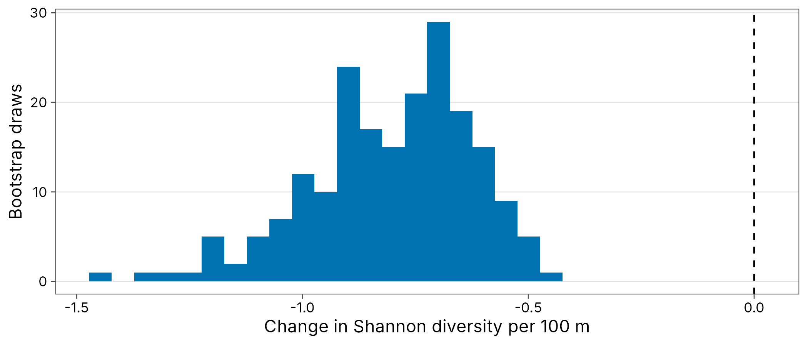
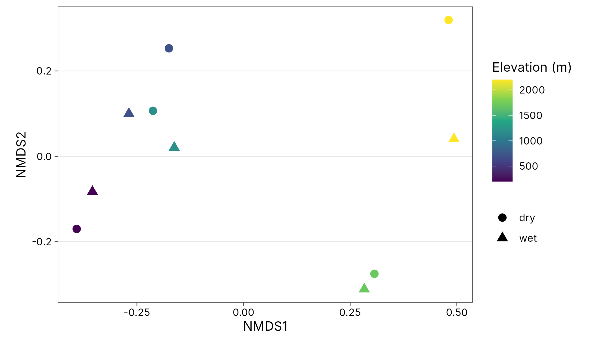

Diversity estimates are often the response in a model of environmental drivers. Two things matter: the estimates should be comparable (equal coverage or asymptotic), and their uncertainty should carry through to the model. tidydiversity results are tidy tibbles, so this takes a few lines.
library(tidydiversity)
library(dplyr)
library(ggplot2)
set.seed(2026)
sites <- distinct(png_ants, site, elevation)Model-ready estimates
tidy() renames columns to the broom conventions and adds
an inverse-variance weight; add_site_data()
joins covariates that are constant within each site.
est <- div_standardise(png_ants,
q = c(0, 1, 2), .by = season,
nboot = 200
) |>
tidy() |>
add_site_data(sites)
est
#> # A tibble: 30 x 12
#> season site q m method coverage estimate std.error conf.low
#> <chr> <chr> <dbl> <dbl> <chr> <dbl> <dbl> <dbl> <dbl>
#> 1 dry MW0200 0 11.6 rarefaction 0.565 7.96 0.489 7.00
#> 2 dry MW0200 1 11.6 rarefaction 0.565 7.10 0.549 6.02
#> 3 dry MW0200 2 11.6 rarefaction 0.565 6.24 0.563 5.13
#> 4 wet MW0200 0 45.1 rarefaction 0.796 15.7 1.55 12.6
#> 5 wet MW0200 1 45.1 rarefaction 0.796 9.57 1.24 7.14
#> 6 wet MW0200 2 45.1 rarefaction 0.796 6.63 0.926 4.82
#> 7 dry MW0700 0 46.0 extrapolation 0.565 26.0 4.76 16.6
#> 8 dry MW0700 1 46.0 extrapolation 0.565 17.9 5.06 7.95
#> 9 dry MW0700 2 46.0 extrapolation 0.565 10.5 4.64 1.42
#> 10 wet MW0700 0 116 extrapolation 0.796 42.2 6.21 30.1
#> # i 20 more rows
#> # i 3 more variables: conf.high <dbl>, weight <dbl>, elevation <int>Approaches
Inverse-variance weights give less influence to imprecise estimates.
# A site with one species has a zero standard error and no weight
shannon <- filter(est, q == 1, !is.na(weight))
fit_lm <- lm(estimate ~ elevation + I(elevation^2) + season,
data = shannon, weights = weight
)
broom::tidy(fit_lm, conf.int = TRUE)
#> # A tibble: 4 x 7
#> term estimate std.error statistic p.value conf.low conf.high
#> <chr> <dbl> <dbl> <dbl> <dbl> <dbl> <dbl>
#> 1 (Intercept) 8.61 2.23 3.87 0.00830 3.16 1.41e+1
#> 2 elevation -0.00557 0.00376 -1.48 0.189 -0.0148 3.63e-3
#> 3 I(elevation^2) 0.00000117 0.00000154 0.760 0.476 -0.00000260 4.95e-6
#> 4 seasonwet 2.42 1.72 1.40 0.210 -1.80 6.64e+0Each elevation band was sampled in both seasons, so sites are repeated. Add a random effect for site with lme4 (or glmmTMB, which takes the same formula).
fit_mm <- lme4::lmer(estimate ~ elevation + season + (1 | site),
data = shannon, weights = weight / mean(weight)
)
summary(fit_mm)$coefficients
#> Estimate Std. Error t value
#> (Intercept) 8.335239972 1.936638262 4.303974
#> elevation -0.002897246 0.001183797 -2.447418
#> seasonwet 2.126186442 1.391201962 1.528309mgcv fits a smooth response along the gradient.
fit_gam <- mgcv::gam(estimate ~ s(elevation, k = 4) + season,
data = shannon, weights = weight / mean(weight), method = "REML"
)
summary(fit_gam)$s.table
#> edf Ref.df F p-value
#> s(elevation) 1.00008 1.00016 8.487165 0.02254615
grid <- tidyr::expand_grid(
elevation = seq(200, 2200, by = 20),
season = c("wet", "dry")
)
pred <- predict(fit_gam, grid, se.fit = TRUE)
grid$fit <- pred$fit
grid$se <- pred$se.fit
ggplot(grid, aes(elevation, fit, colour = season, fill = season)) +
geom_ribbon(aes(ymin = fit - 1.96 * se, ymax = fit + 1.96 * se),
alpha = 0.2, colour = NA
) +
geom_line() +
geom_pointrange(aes(y = estimate, ymin = conf.low, ymax = conf.high),
data = shannon
) +
scale_colour_tidydiversity() +
scale_fill_tidydiversity() +
labs(
x = "Elevation (m)",
y = "Shannon diversity (effective number of species)",
colour = NULL, fill = NULL
) +
theme_tidydiversity()
Observed richness is a count, but it depends on sampling effort. Model standardised richness with a Gamma GLM (positive, continuous), or observed richness with a Poisson GLM and log sample size as an offset.
rich <- filter(est, q == 0, !is.na(weight))
broom::tidy(glm(estimate ~ elevation + season,
data = rich,
family = Gamma(link = "log"), weights = weight / mean(weight)
))
#> # A tibble: 3 x 5
#> term estimate std.error statistic p.value
#> <chr> <dbl> <dbl> <dbl> <dbl>
#> 1 (Intercept) 2.10 0.440 4.78 0.00200
#> 2 elevation -0.000597 0.000259 -2.31 0.0544
#> 3 seasonwet 0.822 0.498 1.65 0.143
obs <- div_hill(png_ants, q = 0, .by = season) |> add_site_data(sites)
broom::tidy(glm(diversity ~ elevation + season + offset(log(n)),
data = obs, family = poisson
))
#> # A tibble: 3 x 5
#> term estimate std.error statistic p.value
#> <chr> <dbl> <dbl> <dbl> <dbl>
#> 1 (Intercept) -0.874 0.181 -4.81 0.00000148
#> 2 elevation 0.0000230 0.000131 0.175 0.861
#> 3 seasonwet -0.197 0.173 -1.14 0.256Propagating uncertainty with bootstrap draws
Weights use only the standard error. div_boot() returns
the bootstrap replicates themselves, so the whole model can be refitted
to each replicate and the spread of the coefficients includes the
estimation uncertainty in the response.
draws <- div_boot(png_ants,
q = 1, type = "standardised", .by = season,
coverage = 0.9, nboot = 200
) |>
add_site_data(sites)
draws
#> # A tibble: 2,000 x 7
#> season site q m .draw diversity elevation
#> <chr> <chr> <dbl> <dbl> <int> <dbl> <int>
#> 1 dry MW0200 1 47.5 1 8.01 200
#> 2 dry MW0200 1 47.5 2 11.3 200
#> 3 dry MW0200 1 47.5 3 9.80 200
#> 4 dry MW0200 1 47.5 4 8.38 200
#> 5 dry MW0200 1 47.5 5 9.94 200
#> 6 dry MW0200 1 47.5 6 8.98 200
#> 7 dry MW0200 1 47.5 7 12.8 200
#> 8 dry MW0200 1 47.5 8 12.4 200
#> 9 dry MW0200 1 47.5 9 13.2 200
#> 10 dry MW0200 1 47.5 10 12.2 200
#> # i 1,990 more rows
slopes <- draws |>
group_by(.draw) |>
group_modify(\(d, key) {
broom::tidy(lm(diversity ~ elevation + season, data = d))
}) |>
ungroup() |>
filter(term == "elevation")
quantile(slopes$estimate, c(0.025, 0.5, 0.975))
#> 2.5% 50% 97.5%
#> -0.011902670 -0.007785796 -0.005202705
ggplot(slopes, aes(estimate * 100)) +
geom_histogram(bins = 30, fill = plot_palette(1)) +
geom_vline(xintercept = 0, linetype = "dashed") +
labs(x = "Change in Shannon diversity per 100 m", y = "Bootstrap draws") +
theme_tidydiversity()
Beta diversity
Distance decay
beta_decay() gives one row per pair of sites with the
distance along one or more gradients. Several columns give Euclidean
distance.
decay <- beta_decay(png_ants, elevation, .by = season)
broom::tidy(lm(turnover ~ distance + season, data = decay))
#> # A tibble: 3 x 5
#> term estimate std.error statistic p.value
#> <chr> <dbl> <dbl> <dbl> <dbl>
#> 1 (Intercept) 0.664 0.0723 9.18 0.0000000531
#> 2 distance 0.000168 0.0000590 2.85 0.0110
#> 3 seasonwet -0.0149 0.0590 -0.252 0.804Pairs are not independent, so test the relationship with a Mantel test rather than the lm p-values.
wet <- filter(png_ants, season == "wet")
d_beta <- beta_dist(beta_pair(wet), "turnover")
d_elev <- dist(distinct(wet, site, elevation)$elevation)
vegan::mantel(d_beta, d_elev, permutations = 999)
#> 'nperm' >= set of all permutations: complete enumeration.
#> Set of permutations < 'minperm'. Generating entire set.
#>
#> Mantel statistic based on Pearson's product-moment correlation
#>
#> Call:
#> vegan::mantel(xdis = d_beta, ydis = d_elev, permutations = 999)
#>
#> Mantel statistic r: 0.8064
#> Significance: 0.016667
#>
#> Upper quantiles of permutations (null model):
#> 90% 95% 97.5% 99%
#> 0.443 0.515 0.522 0.655
#> Permutation: free
#> Number of permutations: 119PERMANOVA and ordination
# One sampling unit per elevation band and season
units <- mutate(png_ants, unit = paste(site, season))
bray <- beta_dist(beta_pair(units, site = unit, index = "bray"))
unit_data <- distinct(units, unit, site, season, elevation)
unit_data <- unit_data[match(labels(bray), unit_data$unit), ]
vegan::adonis2(bray ~ elevation + season,
data = unit_data,
permutations = 999
)
#> Permutation test for adonis under reduced model
#> Permutation: free
#> Number of permutations: 999
#>
#> vegan::adonis2(formula = bray ~ elevation + season, data = unit_data, permutations = 999)
#> Df SumOfSqs R2 F Pr(>F)
#> Model 2 1.1156 0.30648 1.5467 0.055 .
#> Residual 7 2.5244 0.69352
#> Total 9 3.6400 1.00000
#> ---
#> Signif. codes: 0 '***' 0.001 '**' 0.01 '*' 0.05 '.' 0.1 ' ' 1
nmds <- vegan::metaMDS(bray, trace = FALSE)
bind_cols(unit_data, as.data.frame(vegan::scores(nmds))) |>
ggplot(aes(NMDS1, NMDS2, colour = elevation, shape = season)) +
geom_point(size = 3) +
scale_colour_viridis_c() +
coord_equal() +
labs(colour = "Elevation (m)", shape = NULL) +
theme_tidydiversity(legend_position = "right")